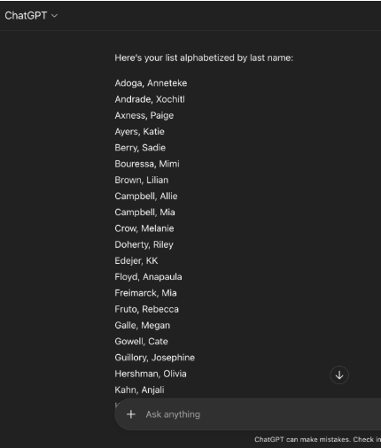
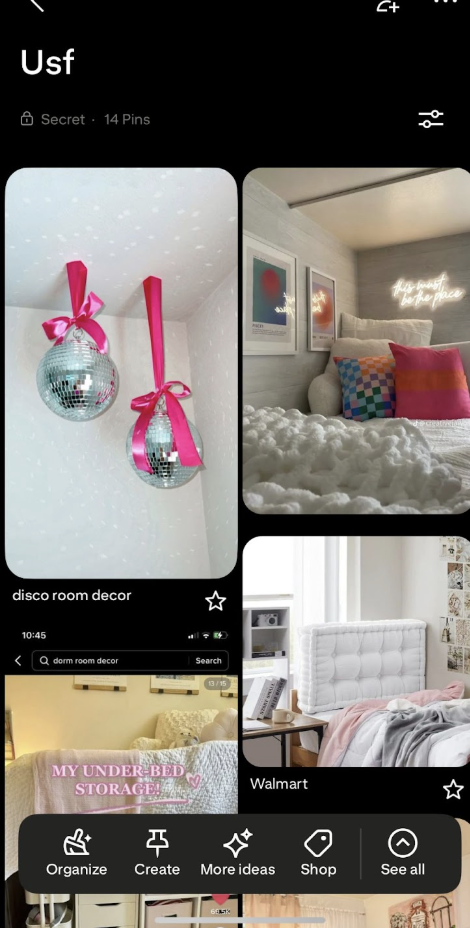

I use the internet to get ideas on sites like pinterest, tik tok, and google. I also use it to stay connected with friends and family with apps like instagram, snapchat.

Here, I used chat gpt to help organize my sororities roster.

Here, I used pinterest to help me visualize my freshman year dorm.
I hope the internet and online communities can become places built on empathy and respect rather than negativity. They should be safe spaces where people from different backgrounds can share ideas, learn from each other, and feel a sense of belonging. At its best, the internet can bring people together in meaningful ways, and I want that to be the focus moving forward.